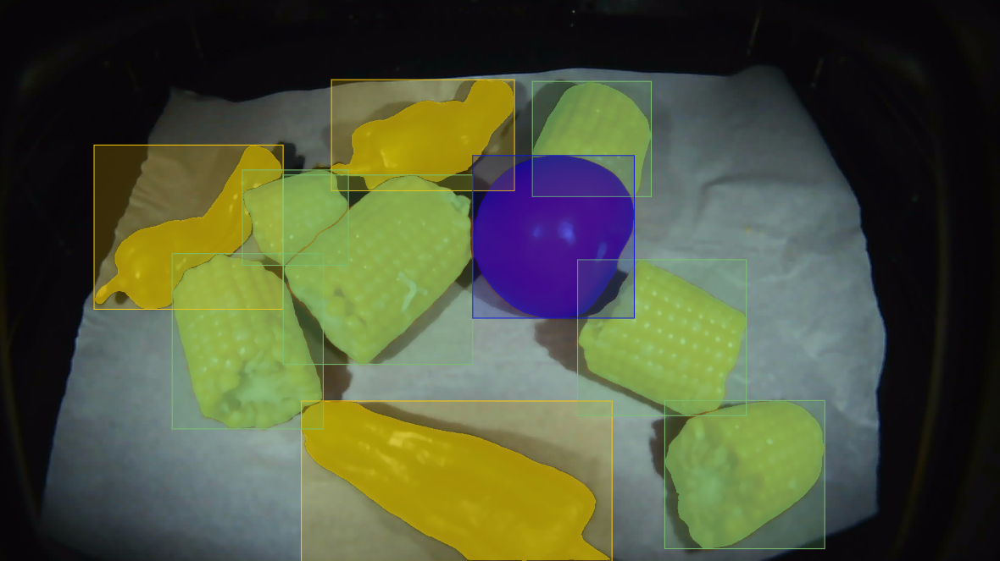

4. 运行时使用与验证
4.1. 范围
本页面说明如何初始化 NNSeg、通过 C++ 或 C 接口执行推理，以及在生产代码中安全消费分割输出。
4.2. 支持的模型族
当前运行时支持 yolov5、yolov8、yolov11 等 YOLO 分割变体（包含 yolo11 等简写别名）。
4.3. 输入约束
NNSeg 接收紧密存储的 RGB888 或 BGR888 帧。
宽度与高度必须为正。
数据指针必须有效。
通道数必须与像素格式匹配。
非紧密步长或不支持的格式会返回运行时错误。
4.4. C++ API 工作流
#include "nnseg.hpp"
#include <vector>
int main() {
nnseg::NNSegEngine engine;
std::string error;
if (!engine.Init("./resources/nnseg.cfg", &error)) {
return 1;
}
std::vector<unsigned char> rgb(320 * 256 * 3, 0);
nnseg::ImageFrameView frame{rgb.data(), 320, 256, 3, 0, nnseg::PixelFormat::kRGB888};
nnseg::SegmentationResult result = engine.Predict(frame);
if (!result.ok) {
return 2;
}
return 0;
}
4.5. C API 工作流
#include "nnseg_c.h"
int main(void) {
nnseg_engine_t *engine = nnseg_create();
if (!engine) return 1;
if (nnseg_init_from_file(engine, "./resources/nnseg.cfg") != NNSEG_STATUS_OK) {
nnseg_destroy(engine);
return 2;
}
unsigned char image[320 * 256 * 3] = {0};
nnseg_image_frame_t frame = {image, 320, 256, 3, 0, NNSEG_PIXEL_FORMAT_RGB888};
nnseg_segmentation_result_t result = {0};
int status = nnseg_predict(engine, &frame, &result);
nnseg_result_release(&result);
nnseg_destroy(engine);
return status == NNSEG_STATUS_OK ? 0 : 3;
}
4.6. 配置文件
打包提供的 nnseg.cfg 支持模型路径、模型类型、输入尺寸、阈值与跟踪参数。相对 model_path 会按配置文件所在目录解析。
4.7. 输出结构
每次成功推理会返回：
ok 标志与 schema 版本。
包含 track_id、class_id、confidence、边界框与可选 mask 的实例列表。
推理失败时的错误文本。
在 C API 中，动态分配的输出缓冲区必须通过 nnseg_result_release 与 nnseg_model_info_release 释放。
4.8. 结果可视化示例
下图展示了一个实际食材场景的推理结果。流水线执行实例级前景提取，并为候选目标叠加检测框，可用于下游区域级分析与质量控制。


Figure 4.1 食材场景中的实例分割与候选区域叠加
如 Figure 4.1 所示，分割得到的前景掩码与目标窗口可被后处理模块消费，用于计算轮廓统计、面积占比与逐目标分类输入。
4.9. 验证覆盖范围
test_package 测试集覆盖以下内容：
初始化失败路径与错误码映射。
初始化前后的 Predict 行为。
RGB/BGR 成功路径与不支持像素格式的拒绝行为。
C API 内存释放行为与空参数安全性。
模型信息获取与 schema 一致性。